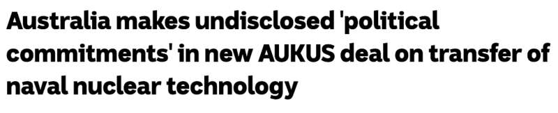

澳洲广播公司报道称，Albanese政府与AUKUS伙伴国之间达成了一项新协议，其中涉及未公开的“政治承诺”。

由于该协议涉及向澳洲转让海军核技术，批评者警告说，这可能还允许在澳洲倾倒放射性核废料。
白宫确认，澳洲、英国和美国达成了另一项重要的AUKUS协议，这是一个“标志性的里程碑”，将促进三方进一步合作，对澳洲建造、运营和维护核动力潜艇至关重要。
澳洲国防部长Richard Marles和美国国防部长Lloyd Austin（图片来源：澳洲广播公司）
根据去年在圣地亚哥公布的AUKUS计划，澳洲将在未来三十年内进行大量投资，用于增强其海军能力。
澳洲的花费将高达3680亿澳元，其中包括购买二手的弗吉尼亚级核潜艇，然后使用英国提供的技术来开发一支新的核动力潜艇舰队，被称为SSN-AUKUS。
美国总统拜登写信给澳洲的众议员和参议院院长，信中他呼吁澳洲国会对新的AUKUS协议给予支持和积极的态度。
拜登：澳洲对共同防御作出重大贡献
拜登在信中解释说，这项新协议将允许继续交流和共享海军核推进信息（NNPI），包括之前仅在美国和英国之间共享的某些限制数据（RD）。
信中写道，“该协议涉及允许常规武装的核动力潜艇的核推进装置以及其部件和备件等相关设备的转让，以扩大各国政府之间的合作。”
（图片来源：澳洲广播公司）
“澳洲和英国通过国际安排与美国合作，为我们的共同防御和安全做出了重大和实质性的贡献。”
“澳洲是《太平洋安全保障条约》（ANZUS）的成员，英国则是北约组织（NATO）的成员。”
“三方合作伙伴还达成了一项不具有法律约束力的‘谅解协议’，谅解中包含了各国政府对协议中某些条款的执行或实现的期望，并提供了额外的相关政治承诺。”
关于倾倒放射性废物的漏洞
包括绿党在内的AUKUS批评者警告说，该新协议可能允许美国在澳洲存储放射性核废物，并在当地进行铀浓缩，但政府坚称事实并非如此。
（图片来源：网络）
澳洲保护基金会的无核运动活动家Dave Sweeney警告说：“政治保障是有的，但法律保障、立法保障和制度保障却没有，这个漏洞需要堵上”
“这是对AUKUS如何运作的众多担忧和质疑之一，这可能会给我们的港口、海港、水域和陆地上的放射性废物管理带来更大的压力和核威胁。”